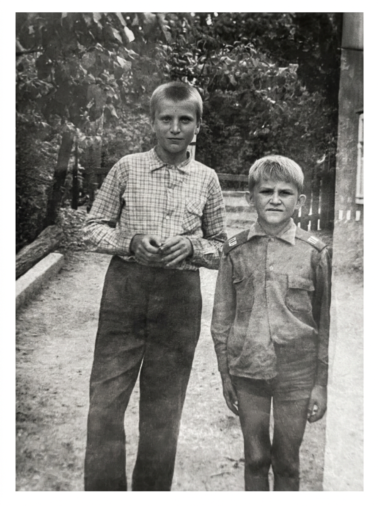
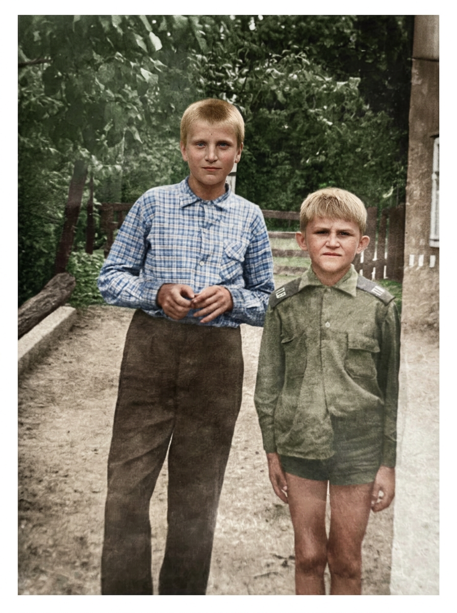

two_boys · MODELS14 · полный review
Одно фото · 14 моделей · BEFORE/AFTER · prompt + settings · отзыв (localStorage) · copy/download JSON для Telegram → Q
Честно: AFTER только если файл реально сгенерирован · Fill Pro / Ideogram = SKIP (нужен mask) · FACE_LOCK parent-eye · HARD BAN pd_02_stains (не на странице) · never fake AFTER · NOT_CLAIMED: sellable / conveyor / PASS-all / etalon / GPU rent.
BEFORE (исходник)

REF · AUTH r4 (reuse)

REF · COLOR ALIVE (reuse)

Навигация: клик по chip · клавиши ←/→ или j/k · deep-link #model=gpt2 · Esc = показать все
Отзыв / feedback · export для Q
Комментарий + оценка по текущей модели. Сохраняется в localStorage. Copy JSON / Download JSON — для вставки в Telegram.
Модель: —
Markers: nano-alt-two-boys-models14 · two-boys-models14 · data-two-boys-models14 · page-review-ui · prompt · settings · feedback · comment · отзыв · localStorage · clipboard · FREE UI · NO_RENT · HARD BAN pd_02_stains